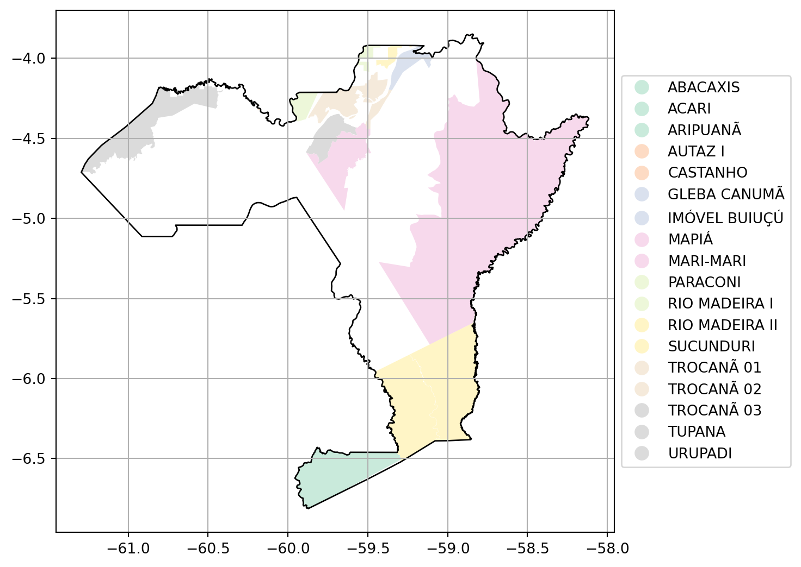
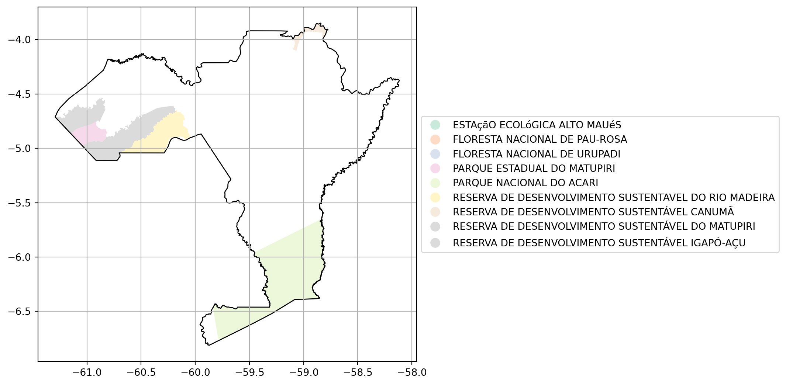
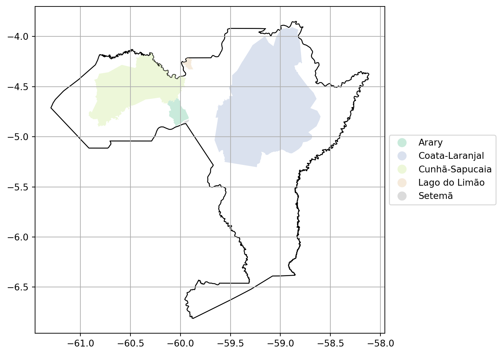
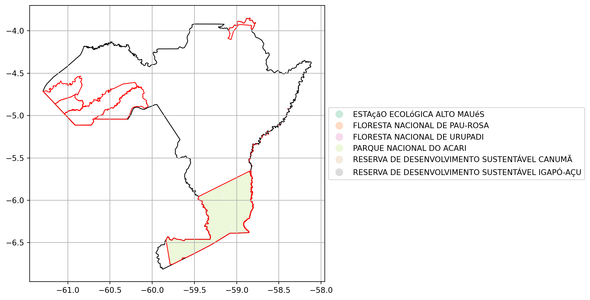
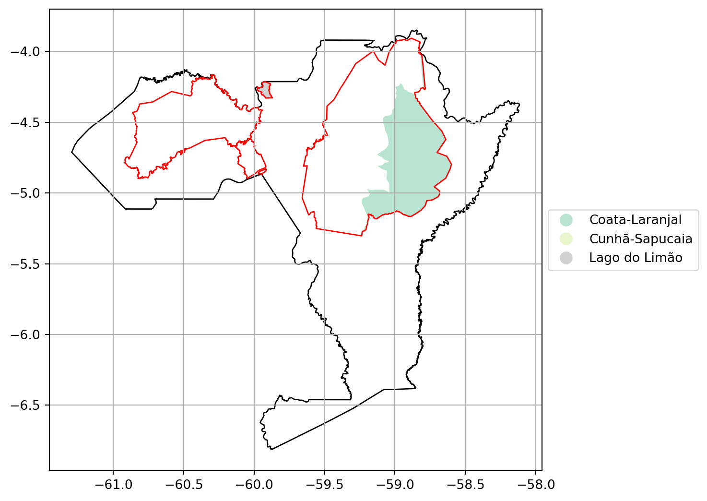

17 Análise do Estado do Amazonas.
17.1 Informações Gerais.
17.2 Glebas Federais na Unidade da Federação
17.2.1 Área com Glebas Federais

17.2.2 Tabela de Glebas Federais no Município e suas áreas
| Nome da Gleba Federal | Área (km²) |
|---|---|
| 25 DE SETEMBRO | 404.6249 |
| ABACAXIS | 5516.0765 |
| ABELHAS | 2317.3456 |
| ABUNÃ PARTE A E B | 3.0655 |
| ACARAZINHO | 1486.5738 |
| ACARI | 4528.8503 |
| ACIMÃ | 364.8607 |
| AFLUENTE | 177.5183 |
| ALALAU | 6009.8260 |
| ALTO CRATO | 14.6821 |
| ALTO PAMARI | 891.7528 |
| AMASSUNU | 9107.2583 |
| AMAZÔNIA | 2011.4720 |
| ANAMA | 2179.1851 |
| ANORI | 562.3342 |
| ANTIMARY | 1344.1232 |
| ANTONIETA ATAÍDE | 1169.2155 |
| APUAU-CUEIRAS | 2108.3219 |
| ARAMAÇÁ | 114.2431 |
| ARARIA | 24.5557 |
| ARIPUANÃ | 5567.4909 |
| AUAPÉS | 489.4394 |
| AUTAZ I | 1428.5541 |
| AUTAZ II – ZONA 21 | 969.6322 |
| AUTAZ III | 12.0177 |
| AUTAZ MIRIM | 4564.3065 |
| AÇUÃ | 1597.0204 |
| B 3 - 2 | 1.6176 |
| B 3 - 5 | 47.5076 |
| B 3 - 6 | 17.1668 |
| B-3 | 14.3415 |
| B-3 - 3 | 303.8218 |
| B-3/8 | 149.3571 |
| B2 | 1344.9300 |
| BAETAS | 3424.2422 |
| BAIXO MARI | 59.2075 |
| BALATA | 2928.5525 |
| BALBINA | 3859.4741 |
| BANANEIRA | 24.3342 |
| BOA ESPERANÇA | 2536.1466 |
| BOA VISTA | 3193.2589 |
| BOM LUGAR | 580.5531 |
| C1 | 2154.5569 |
| CABALIANA | 4633.8263 |
| CACHOEIRA | 39.1543 |
| CAMANAU | 1818.3903 |
| CAMATIÁ | 7430.4541 |
| CAPITÃO SILVIO FIGURA 1 | 5.1550 |
| CARATIAN | 167.0594 |
| CASTANHAL GRANDE | 3335.2195 |
| CASTANHO | 2661.7410 |
| COATI | 1363.2795 |
| CUIEIRAS-TARUMÃ | 1430.8378 |
| CUNIÃ | 102.7226 |
| CURUMIM | 433.1416 |
| CURUPATI | 1713.1156 |
| CURUQUETÊ | 8264.2279 |
| ESPERANCA | 275.4740 |
| EUCLIDES DA CUNHA FIGURA 01 | 15.0439 |
| EUCLIDES DA CUNHA FIGURA 02 | 2.8003 |
| FAZENDA CRUZEIRO | 21.7604 |
| FAZENDA RECREIO | 61.9500 |
| GLEBA ACARÁ | 1710.9026 |
| GLEBA ALTO PIXUNA | 463.1604 |
| GLEBA B-3-1 | 10.5189 |
| GLEBA B-3-4 | 305.3232 |
| GLEBA B-3-7 | 319.8017 |
| GLEBA BODAJOS | 8894.7813 |
| GLEBA CAMPINARANA – PERÍMETRO | 1259.5254 |
| GLEBA CANUMÃ | 297.1512 |
| GLEBA CAPITARI | 1408.6159 |
| GLEBA CRAJARI | 831.8236 |
| GLEBA FORMOSO - PERÍMETRO | 139.7829 |
| GLEBA GUAJARÁ | 62.1922 |
| GLEBA GUARANOPOLIS | 2685.5313 |
| GLEBA H1 | 2863.8361 |
| GLEBA JARI | 3059.2378 |
| GLEBA JOAO BENTO | 2996.1237 |
| GLEBA MARIO LOBÃO | 10.5304 |
| GLEBA MATUPIRI | 1670.5766 |
| GLEBA MONTE CRISTO | 4639.9810 |
| GLEBA MUNDURUCUS | 8955.8088 |
| GLEBA ORIENTE | 566.4988 |
| GLEBA PARAUARI | 1.8713 |
| GLEBA PURETÊ - PARTE | 2357.6102 |
| GLEBA SACADO – PERÍMETRO | 10.5558 |
| GLEBA SUCURIJU | 4022.5309 |
| GLEBA SÃO BENEDITO | 2993.5400 |
| GLEBA SÃO JORGE AM | 105.9924 |
| GLEBA T-2 | 3192.8240 |
| GLEBA TAPAUÁ – 1 | 269.9509 |
| GLEBAPIXUNA 6 | 39.0959 |
| GLEBA_PARAUARI | 4702.3993 |
| GLEBA_SÃO_FRANCISCO_PARNÁ_E_MOURINHA | 86.1790 |
| GUARIBA | 5484.8216 |
| ILHA DA MARCHANTARIA | 29.9544 |
| IMOVEL MOURINHA | 29.7393 |
| IMOVEL MUCUIM | 3202.9488 |
| IMÓVEL BUIUÇÚ | 3973.3133 |
| IMÓVEL EPHIGÊNIO FERREIRA SALLES | 467.4569 |
| IMÓVEL IPORA | 609.9529 |
| IMÓVEL MIRITI I | 46.9039 |
| IMÓVEL MIRITI II | 30.1948 |
| INFERNINHO | 4388.4775 |
| IPORÁ 1 E 2 | 619.1172 |
| IQUIREMA | 211.9576 |
| IQUIRI | 378.1139 |
| IRANDUBA - PIC BELA VISTA | 786.1600 |
| ITAQUAI | 2126.1085 |
| JACARÉ | 3243.3326 |
| JACY PARANÁ | 3.9877 |
| JAMICIÃ | 522.6330 |
| JANAUACÁ | 503.6389 |
| JANDIATUBA | 3914.9153 |
| JANDIATUBA I | 7027.3643 |
| JATAPU | 1791.0776 |
| JATUARANA | 2334.1703 |
| JAVARI | 13461.3808 |
| JUMA | 1235.6169 |
| JUQUI | 3496.1120 |
| JURUTI VELHO | 0.6406 |
| LAGO DO JACINTO | 19.7053 |
| LIMITE | 7.8292 |
| LUA NOVA/REDENCAO | 40.9633 |
| M2 | 5334.4244 |
| MACHADINHO | 0.0011 |
| MACURIAN | 154.5818 |
| MADRUBA | 597.2892 |
| MAICI | 3155.4261 |
| MAMORI | 745.4102 |
| MANAOS | 135.3499 |
| MANAQUIRI | 824.0520 |
| MANICOREZINHO | 2773.3627 |
| MAPINGUARI | 2470.5002 |
| MAPIÁ | 1017.3599 |
| MAPUÃ | 190.3762 |
| MARI-MARI | 11327.8731 |
| MARIPUA- B | 128.8743 |
| MARIPUÁ-A | 3121.8383 |
| MARMELO | 18.7402 |
| MILITÃO DUTRA | 760.3921 |
| MIRARI | 702.5021 |
| MIRITI | 3046.1936 |
| MIRITI - III | 16.3606 |
| NAZARÉ | 126.3454 |
| NHAMUNDÁ | 6637.1371 |
| NOVA CALIFÓRNIA | 0.8447 |
| NOVO AXIOMA/ REDENÇÃO | 792.9450 |
| PACOVAL | 33.2414 |
| PAD PEDRO PEIXOTO | 25.1404 |
| PADAUARI | 7093.0891 |
| PALMEIRA | 4772.0702 |
| PARACONI | 12882.0642 |
| PAUINI | 935.7893 |
| PAUNEN 2 | 185.0974 |
| PERSEVERANÇA | 45.8440 |
| PIC BELA VISTA II | 718.9695 |
| PIC BELA VISTA – MANACAPURU | 553.7339 |
| PIRAQUARA | 824.8722 |
| PIRAÍBAS | 523.4251 |
| PITINGA 2 | 30.1063 |
| PITINGA 3 | 30.1066 |
| PITINGA I | 212.3738 |
| PITINGA I PARCELA 03 | 592.7291 |
| PITINGA IV | 60.3870 |
| PITINGA V | 3395.2371 |
| PIXUNA | 231.9477 |
| PIXUNA 2 | 13.1441 |
| PIXUNA 3 | 9.0870 |
| PIXUNA 4 | 24.8386 |
| PIXUNA 5 | 23.7607 |
| PIXUNA 7 | 65.9810 |
| POÇO DO ARROZ | 21.8072 |
| PROFESSOR FREDERICO VEIGA – 01 | 33.2834 |
| PROFESSOR FREDERICO VEIGA – 03 | 29.2789 |
| PUNAENA | 1792.2312 |
| PURAQUEQUARA | 46.1058 |
| PURETÊ | 8049.9763 |
| PURUINI | 2555.3962 |
| PURUS | 10752.4826 |
| PURUS - PARCELA 01 | 28.9369 |
| PURUS - PARCELA 02 | 91.2296 |
| PURUS - PARCELA 03 | 98.8662 |
| PURUS - PARCELA 04 | 2102.0790 |
| PURUS - PARCELA 05 | 293.8141 |
| PURUS - PARCELA 06 | 1686.9329 |
| PURUS - PARCELA 07 | 397.4897 |
| PURUS - PARCELA 08 | 80.0041 |
| PURUS - PARCELA 09 | 31.5040 |
| Pombas | 4507.9604 |
| REALIDADE | 91.8066 |
| RECREIO DO SANTO ANTONIO | 1193.9653 |
| REDENÇÃO REMANESCENTE | 15.2811 |
| REMANSO PERÍMETRO | 6.5760 |
| RIO AMAZONAS | 1239.3822 |
| RIO MADEIRA | 1341.8007 |
| RIO MADEIRA I | 1922.5530 |
| RIO MADEIRA II | 618.1246 |
| RIO MADEIRA III | 267.4157 |
| RIO PARDO | 2631.4748 |
| RIO PRETO | 0.2328 |
| RIO PRETO DA EVA | 99.6949 |
| SANGUÃ | 11.6246 |
| SANTA RITA I – PERIMETRO | 91.8934 |
| SANTA RITA II | 53.8471 |
| SANTANA E SÃO JOAQUIM | 220.7598 |
| SANTO ANTONIO DO PEIXOTO | 90.2629 |
| SAO JOSE DO IQUIRI | 152.1526 |
| SENÁPOLIS | 50.3572 |
| SENÁPOLIS PARTE A | 72.9433 |
| SENÁPOLIS PARTE A E PARTE B | 20.9693 |
| SEPOTI | 4000.9846 |
| SERINGAL MONTE | 1351.5073 |
| SERINGAL NOVO AXIOMA | 60.0801 |
| SERINGAL REDENÇÃO | 7.1916 |
| SUCUNDURI | 4883.2058 |
| SURURUA | 206.8007 |
| SÃO BENEDITO | 1925.6317 |
| SÃO JOAQUIM | 4.6681 |
| SÃO MATEUS | 19.6044 |
| SÃO RAIMUNDO | 2937.0272 |
| TACANA | 3345.7229 |
| TERRA SANTA | 1.9643 |
| TOCANTINS | 16.9675 |
| TRES IRMÃOS | 691.1812 |
| TRIÂNGULO | 4.1904 |
| TROCANÃ 01 | 754.6674 |
| TROCANÃ 02 | 115.2579 |
| TROCANÃ 03 | 475.8133 |
| TUFARÍ | 3822.7266 |
| TUPANA | 6247.5534 |
| UATUMA | 420.3477 |
| UNIAO | 854.2622 |
| URUAPIARA | 1255.0096 |
| URUPADI | 4739.8052 |
| VELOSO | 4134.7233 |
| VILA FLORIANO PEIXOTO | 37.4248 |
| VIRGEM | 2687.6274 |
| ÁGUA AZUL | 2449.8871 |
| ÁLVARO MAIA | 300.5862 |
17.2.3 Área total de Glebas Federais no Município
398.207,74 km²
17.2.4 Percentual do município ocupado por glebas federais
900,19 %
17.3 Unidades de Conservação no Município
17.3.1 Mapa de Unidades de Conservação

17.3.2 Tabela de Unidades de Conservação no Município e suas áreas
| Nome da Unidade de Conservação | Área (km²) |
|---|---|
| ESTAçãO ECOLóGICA ALTO MAUéS | 1.5176 |
| FLORESTA NACIONAL DE PAU-ROSA | 0.5839 |
| FLORESTA NACIONAL DE URUPADI | 1.0292 |
| PARQUE ESTADUAL DO MATUPIRI | 517.0724 |
| PARQUE NACIONAL DO ACARI | 5368.1889 |
| RESERVA DE DESENVOLVIMENTO SUSTENTAVEL DO RIO MADEIRA | 1297.3833 |
| RESERVA DE DESENVOLVIMENTO SUSTENTÁVEL CANUMÃ | 227.4755 |
| RESERVA DE DESENVOLVIMENTO SUSTENTÁVEL DO MATUPIRI | 1781.4594 |
| RESERVA DE DESENVOLVIMENTO SUSTENTÁVEL IGAPÓ-AÇU | 851.8527 |
17.3.3 Área total de Unidades de Conservação no Município
10.046,56 km²
17.3.4 Percentual do município ocupado por Unidades de Conservação
22,71 %
17.4 Terras Indígenas no Município
17.4.1 Mapa de Terras Indígenas

17.4.2 Tabela de Terras Indígenas no Município e suas áreas
| Nome da Terra Indígena | Área (km²) |
|---|---|
| Arary | 406.9609 |
| Coata-Laranjal | 11575.1588 |
| Cunhã-Sapucaia | 4329.8993 |
| Lago do Limão | 82.1825 |
| Setemã | 12.1509 |
17.4.3 Área total de Terras Indígenas no Município
16.406,35 km²
17.4.4 Percentual do município ocupado por Terras Indígenas
37,09 %
17.5 Análise de Sobreposição sobre as Glebas Federais
17.5.1 Unidades de Conservação sobre Glebas Federais.

17.5.2 Tabela de Unidades de Conservação sobrepostas às Glebas Federais no Município
| Nome da Unidade de Conservação | Área (km²) |
|---|---|
| ESTAçãO ECOLóGICA ALTO MAUéS | 1.0053 |
| FLORESTA NACIONAL DE PAU-ROSA | 0.5799 |
| FLORESTA NACIONAL DE URUPADI | 0.5742 |
| PARQUE NACIONAL DO ACARI | 5293.8602 |
| RESERVA DE DESENVOLVIMENTO SUSTENTÁVEL CANUMÃ | 1.9823 |
| RESERVA DE DESENVOLVIMENTO SUSTENTÁVEL IGAPÓ-AÇU | 0.6623 |
17.5.3 Área total de Unidades de Conservação sobrepostas às Glebas Federais no Município
'5298.66 km²'17.5.4 Terras Indígenas sobre Glebas Federais.

17.5.5 Tabela de Terras Indígenas sobrepostas às Glebas Federais no Município
| Nome da Terra Indígena | Área (km²) |
|---|---|
| Coata-Laranjal | 4053.8546 |
| Cunhã-Sapucaia | 2.9818 |
| Lago do Limão | 81.8165 |
17.5.6 Área total de Terras Indígenas sobrepostas às Glebas Federais no Município
'4138.65 km²'